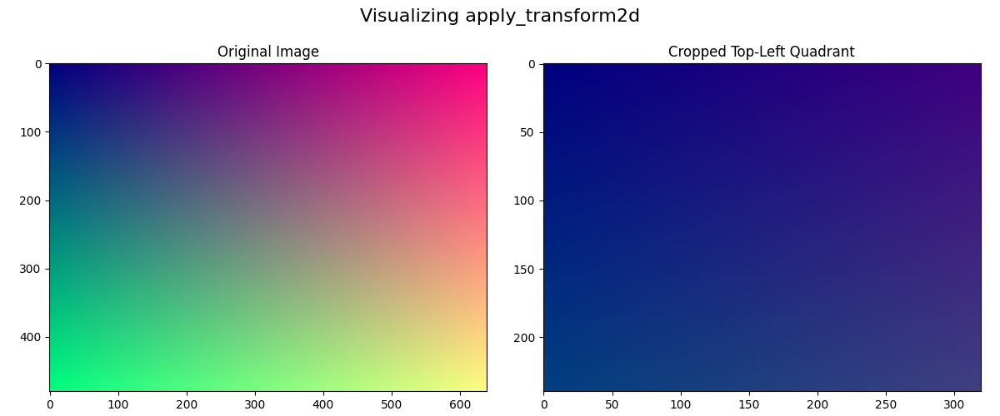
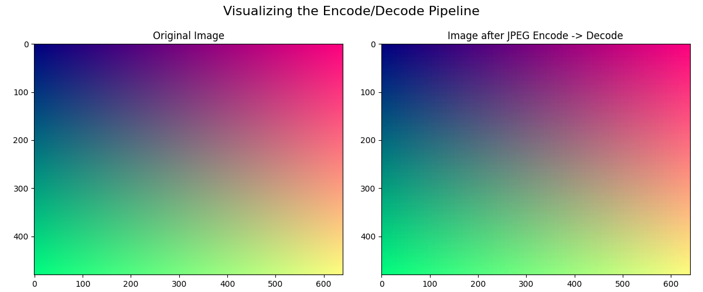

Note
Go to the end to download the full example code.
Tutorial 4: A Deep Dive into Camera Data¶
This tutorial explores the full suite of dataclasses in robo_orchard_core for handling camera data. We will deconstruct the system, starting from its components and building up to the final, usable objects.
You will learn to:
Separate metadata and pixel data using
BatchCameraInfoandBatchImageData.Understand and use
Distortionmodels and theImageModeenum.Combine components into the primary
BatchCameraDataobject.Apply 2D transformations that intelligently update both images and intrinsics.
Handle compressed data streams with
BatchCameraDataEncodedand decode them.
Setup and Imports¶
We need our standard libraries, plus a rich set of classes from the library.
import io # Used for in-memory byte streams for encoding/decoding
import matplotlib.pyplot as plt
import numpy as np
import torch
# PIL is used to simulate image encoding (e.g., to JPEG)
from PIL import Image
from robo_orchard_core.datatypes.camera_data import (
BatchCameraData,
BatchCameraDataEncoded,
BatchCameraInfo,
BatchImageData,
Distortion,
ImageMode,
)
from robo_orchard_core.datatypes.geometry import BatchFrameTransform
from robo_orchard_core.utils.math.transform import Transform2D_M
Step 1: The Components - Metadata vs. Pixel Data¶
The library’s design elegantly separates what a camera is (its metadata) from what a camera sees (its pixel data). Let’s define these two parts.
Part 1.1: BatchCameraInfo - Describing the Camera¶
This object holds everything about the camera: its pose, its optical properties, and lens distortion. It does NOT contain any image pixels.
# Define a camera pose in the world (links back to Tutorial 1 & 2 concepts)
angle_y_neg45 = -np.pi / 4
quat_y_neg45 = torch.tensor(
[[np.cos(angle_y_neg45 / 2), 0, np.sin(angle_y_neg45 / 2), 0]]
)
camera_pose = BatchFrameTransform(
parent_frame_id="world",
child_frame_id="my_camera",
xyz=torch.tensor([[2.0, 2.0, 1.5]]),
quat=quat_y_neg45,
)
# Define the camera's intrinsic matrix (focal length, principal point)
fx, fy, cx, cy = 525.0, 525.0, 320.0, 240.0
intrinsic_matrix = torch.tensor([[[fx, 0, cx], [0, fy, cy], [0, 0, 1.0]]])
# Define a lens distortion model. This is a component of BatchCameraInfo.
# These coefficients are typical for a ROS 'plumb_bob' model.
dist_coeffs = torch.tensor([-0.1, 0.01, -0.005, 0.001])
camera_distortion = Distortion(model="plumb_bob", coefficients=dist_coeffs)
# Now, create the BatchCameraInfo object
cam_info = BatchCameraInfo(
image_shape=(480, 640),
intrinsic_matrices=intrinsic_matrix,
pose=camera_pose,
distortion=camera_distortion,
frame_id="my_camera",
topic="/camera/rgb/image_raw",
)
print("--- BatchCameraInfo (Metadata) ---")
print(f"Camera frame_id: {cam_info.frame_id}")
print(f"Distortion model: {cam_info.distortion.model}")
--- BatchCameraInfo (Metadata) ---
Camera frame_id: my_camera
Distortion model: plumb_bob
Part 1.2: BatchImageData - Holding the Pixels¶
This object is a lightweight container for the raw pixel tensor and its format.
# Create a synthetic 480x640 RGB image with a gradient
height, width = 480, 640
r = torch.linspace(0, 1, width).repeat(height, 1)
g = torch.linspace(0, 1, height).unsqueeze(1).repeat(1, width)
b = torch.ones(height, width) * 0.5
image_tensor = (
torch.stack([r, g, b], dim=-1).unsqueeze(0) * 255
) # Scale to 0-255 for encoding
image_tensor = image_tensor.to(torch.uint8)
# Create the BatchImageData object, specifying the pixel format using the ImageMode enum
image_data = BatchImageData(sensor_data=image_tensor, pix_fmt=ImageMode.RGB)
print("--- BatchImageData (Pixels) ---")
print(f"Image tensor shape: {image_data.sensor_data.shape}")
print(f"Pixel format: {image_data.pix_fmt}")
--- BatchImageData (Pixels) ---
Image tensor shape: torch.Size([1, 480, 640, 3])
Pixel format: RGB
Step 2: BatchCameraData - The Complete, Decoded Picture¶
BatchCameraData is the main class you’ll use for processing. It inherits
from both BatchCameraInfo and
BatchImageData, combining them into a
single, powerful object.
camera_data = BatchCameraData(
sensor_data=image_data.sensor_data,
pix_fmt=image_data.pix_fmt,
image_shape=cam_info.image_shape,
intrinsic_matrices=cam_info.intrinsic_matrices,
pose=cam_info.pose,
distortion=cam_info.distortion,
frame_id=cam_info.frame_id,
topic=cam_info.topic,
)
print("\n--- BatchCameraData (Combined) ---")
print(f"Successfully created BatchCameraData for topic: {camera_data.topic}")
--- BatchCameraData (Combined) ---
Successfully created BatchCameraData for topic: /camera/rgb/image_raw
A Key Feature: Intelligent 2D Transformations¶
The apply_transform2d method is a highlight. It updates both the image pixels and the intrinsic matrix, keeping them synchronized. Let’s perform a “crop” of the top-left quadrant of the image.
# A transform to scale by 2x and focus on the top-left.
crop_transform_matrix = torch.tensor(
[[[2.0, 0.0, 0.0], [0.0, 2.0, 0.0], [0.0, 0.0, 1.0]]]
)
crop_transform = Transform2D_M(matrix=crop_transform_matrix)
# The target output size will be half the original dimensions.
target_hw = (height // 2, width // 2)
cropped_camera_data = camera_data.apply_transform2d(
transform=crop_transform, target_hw=target_hw
)
print(f"\nShape after cropping: {cropped_camera_data.sensor_data.shape}")
print("\n--- Intrinsic Matrix Comparison (The Intuitive Part!) ---")
print(
f"Original Intrinsics:\n{camera_data.intrinsic_matrices[0].numpy().round(1)}"
)
print(
f"\nUpdated Intrinsics after transform:\n{cropped_camera_data.intrinsic_matrices[0].numpy().round(1)}"
)
print(
"\nNotice how the focal lengths (fx, fy) and principal point (cx, cy) were automatically updated!"
)
# Visualize the original and cropped images side-by-side for comparison.
fig, axes = plt.subplots(1, 2, figsize=(12, 5))
axes[0].imshow(camera_data.sensor_data[0].numpy())
axes[0].set_title("Original Image")
axes[1].imshow(cropped_camera_data.sensor_data[0].numpy())
axes[1].set_title("Cropped Top-Left Quadrant")
fig.suptitle("Visualizing apply_transform2d", fontsize=16)
plt.tight_layout(rect=[0, 0.03, 1, 0.95])
plt.show()

Shape after cropping: torch.Size([1, 240, 320, 3])
--- Intrinsic Matrix Comparison (The Intuitive Part!) ---
Original Intrinsics:
[[525. 0. 320.]
[ 0. 525. 240.]
[ 0. 0. 1.]]
Updated Intrinsics after transform:
[[525. 0. 320.]
[ 0. 525. 240.]
[ 0. 0. 1.]]
Notice how the focal lengths (fx, fy) and principal point (cx, cy) were automatically updated!
Step 3: BatchCameraDataEncoded - Handling Compressed Data¶
In real-world applications (datasets, network streams), images are often
compressed (e.g., JPEG, PNG). BatchCameraDataEncoded is designed for this.
It holds the metadata (BatchCameraInfo) plus a list of raw bytes.
# First, let's simulate encoding our original synthetic image into JPEG bytes.
pil_image = Image.fromarray(image_tensor[0].numpy(), "RGB")
buffer = io.BytesIO()
pil_image.save(buffer, format="JPEG")
jpeg_bytes = buffer.getvalue()
# Create the encoded data object. Note `sensor_data` is a list of bytes.
encoded_camera_data = BatchCameraDataEncoded(
sensor_data=[jpeg_bytes], # A list containing the raw bytes
format="jpeg",
# The metadata part is identical to BatchCameraInfo
image_shape=cam_info.image_shape,
intrinsic_matrices=cam_info.intrinsic_matrices,
pose=cam_info.pose,
distortion=cam_info.distortion,
frame_id=cam_info.frame_id,
topic="/camera/rgb/image_raw/compressed",
)
print("\n--- 3: BatchCameraDataEncoded (Compressed) ---")
print(f"Created encoded data object for topic: {encoded_camera_data.topic}")
print(
f"Sensor data is of type: {type(encoded_camera_data.sensor_data[0])} with length {len(encoded_camera_data.sensor_data[0])} bytes"
)
# Perform the decoding
decoded_camera_data = encoded_camera_data.decode()
print("\n--- After Decoding ---")
print(f"Decoded object is of type: {type(decoded_camera_data)}")
print(f"Decoded image tensor shape: {decoded_camera_data.sensor_data.shape}")
# Visualize the original and the decoded image to prove the encode->decode cycle worked.
fig, axes = plt.subplots(1, 2, figsize=(12, 5))
axes[0].imshow(camera_data.sensor_data[0].numpy())
axes[0].set_title("Original Image")
axes[1].imshow(decoded_camera_data.sensor_data[0].numpy())
axes[1].set_title("Image after JPEG Encode -> Decode")
fig.suptitle("Visualizing the Encode/Decode Pipeline", fontsize=16)
plt.tight_layout(rect=[0, 0.03, 1, 0.95])
plt.show()

Decode" class = "sphx-glr-single-img"/>--- 3: BatchCameraDataEncoded (Compressed) ---
Created encoded data object for topic: /camera/rgb/image_raw/compressed
Sensor data is of type: <class 'bytes'> with length 11958 bytes
--- After Decoding ---
Decoded object is of type: <class 'robo_orchard_core.datatypes.camera_data.BatchCameraData'>
Decoded image tensor shape: torch.Size([1, 480, 640, 3])
Total running time of the script: (0 minutes 0.610 seconds)